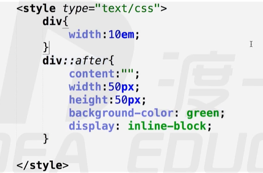
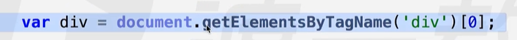
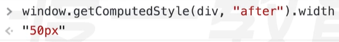
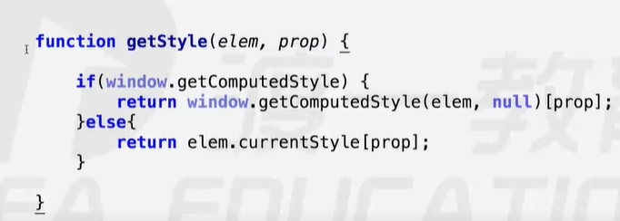
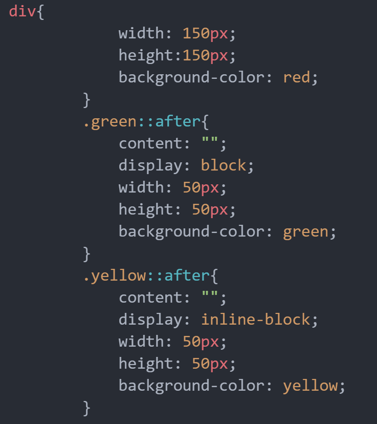
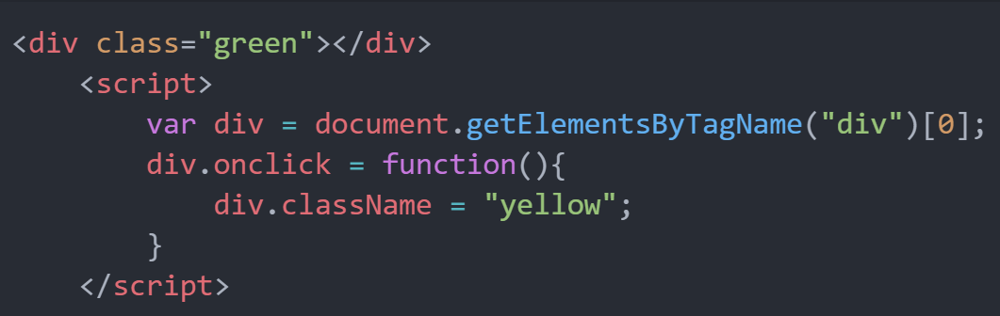
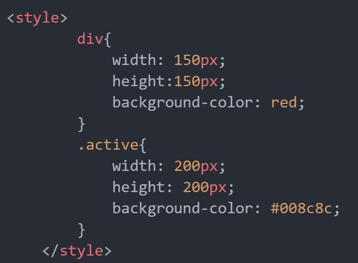
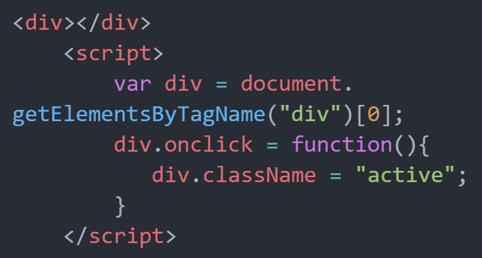
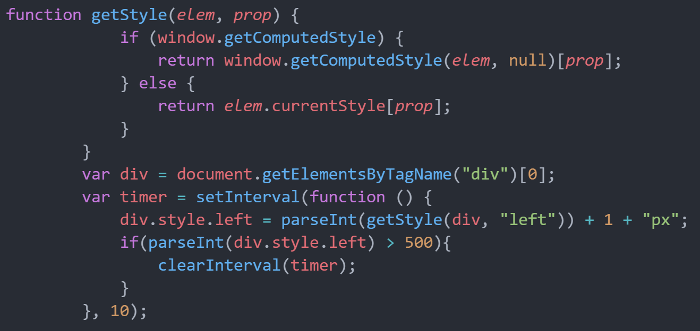

一、dom.style.prop
只有.style可以写入值
可读写行间（内联）样式，看不到内部样式表里的CSS属性，没有兼容性问题，碰到float这样的关键字属性，前面应加css
eg:float — > cssFloat复合（速写）属性必须拆解，组合单词变成小驼峰式写法
写入的值必须是字符串格式
二、查询计算样式(IE8 及 IE8以下不兼容)
window.getComputedStyle(element,null);计算样式只读返回的计算样式的值都是绝对值，没有相对单位，将em，百分号等转化成像素值
参数null： 获取伪元素选择器的内容，但是不能写入



三、查询样式(IE独有的属性)
element.currentStyle:计算样式只读，返回的是计算之后的属性值返回的计算样式的值不是经过转换的绝对值，你写em他就是em
封装兼容性方法

四、如何用伪元素选择器改变方块颜色？
- 这是一种编程思想，改变状态位，但是平时开发不怎么用


五、开发中经常将另外一个状态写到一个类里，然后在事件里改变dom元素的类选择器。
- 优点：效率更高（例div.style.width 点越多，效率越慢），好维护（直接在CSS声明块里面修改，而JS代码块里面仅仅是修改状态位）**


六、习题
- 写一个移动的方块
